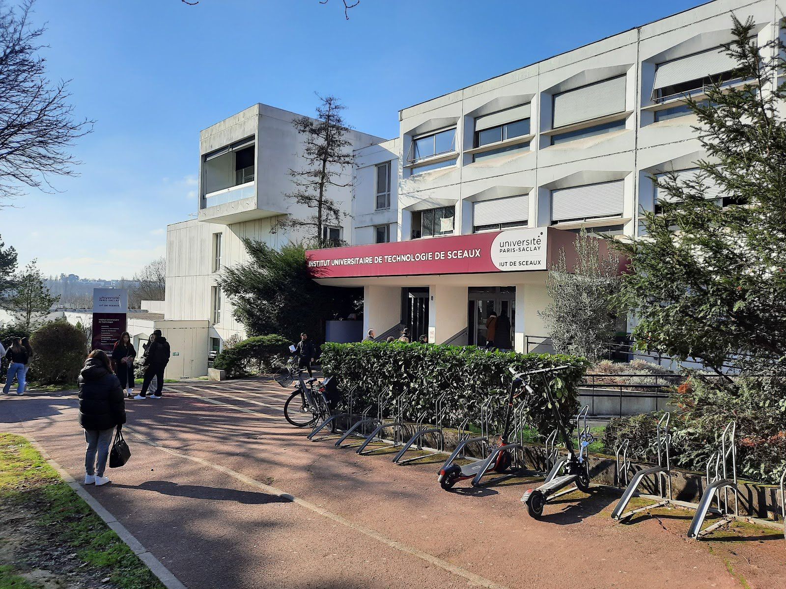
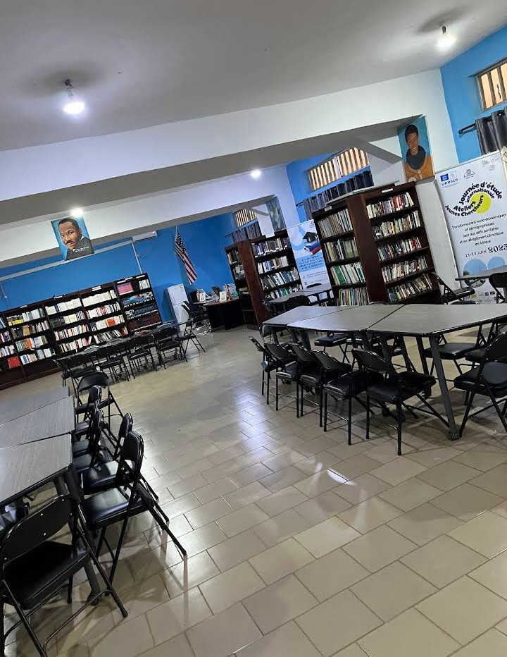
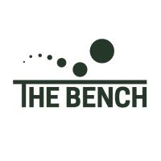
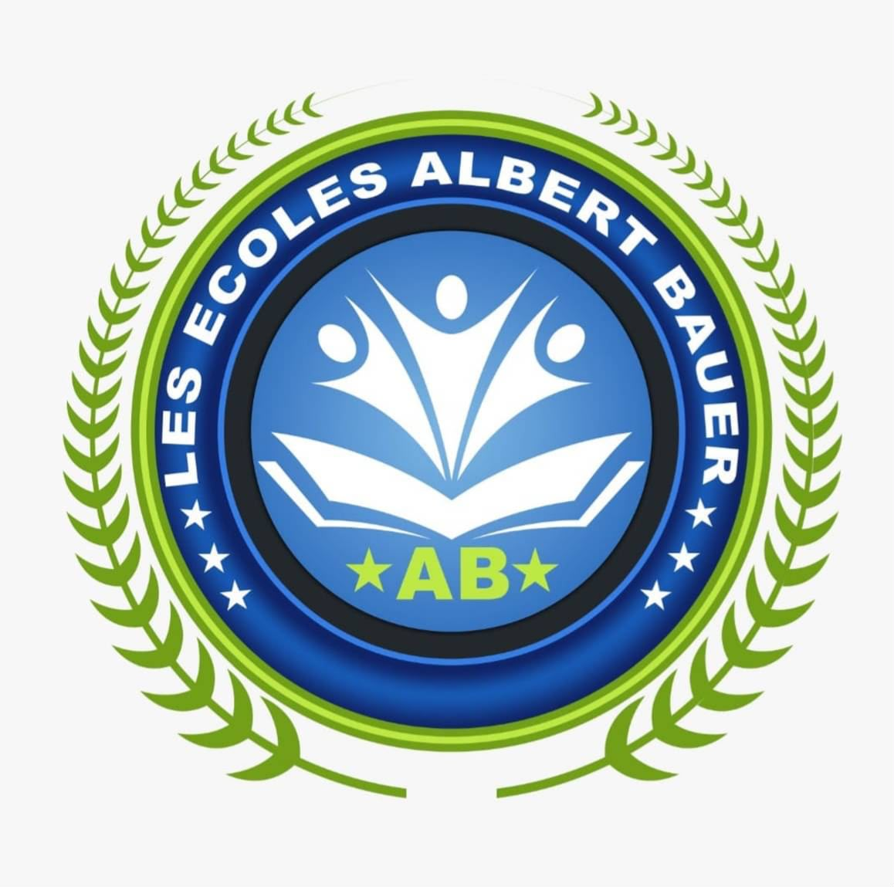

Un parcours académique entre la Guinée et la France, marqué par une formation solide en gestion d'entreprise et développement entrepreneurial.

IUT de Sceaux — Université Paris-Saclay
Après ma licence, j'ai poursuivi mes études à l'étranger — une formation exigeante qui me forme à la création de valeur, au management d'activité et au développement de la chaîne de valeur dans une organisation.
Université Général Lansana Conté de Sonfonia — Conakry
Le socle fondateur de mon parcours en gestion — une vision structurée et rigoureuse du fonctionnement d'une entreprise.

American Corner — Bibliothèque Américaine, Conakry
Une année de formation combinant cours structurés et ateliers animés par des natifs américains. À l'issue, j'ai rejoint l'équipe en tant que bénévole pour aider les étudiants dans leur apprentissage.

En ligne
Formation de pré-incubation qui a nourri directement mon projet entrepreneurial DIYA Vision — les outils concrets pour passer de l'idée à une vision structurée.

Lycée Albert Bauer — Conakry, Guinée
Cette formation m'a permis de développer un esprit analytique et rigoureux — des qualités que je mobilise encore aujourd'hui dans mon approche de la gestion et de la finance.
IUT de Sceaux — Université Paris-Saclay
Après ma licence, j'ai poursuivi mes études à l'étranger — une formation exigeante qui me forme à la création de valeur, au management d'activité et au développement de la chaîne de valeur dans une organisation.
Université Général Lansana Conté de Sonfonia — Conakry
Le socle fondateur de mon parcours en gestion — une vision structurée et rigoureuse du fonctionnement d'une entreprise.
American Corner — Bibliothèque Américaine, Conakry
Une année de formation combinant cours structurés et ateliers animés par des natifs américains. À l'issue, j'ai rejoint l'équipe en tant que bénévole pour aider les étudiants dans leur apprentissage.
En ligne
Formation de pré-incubation qui a nourri directement mon projet entrepreneurial DIYA Vision — les outils concrets pour passer de l'idée à une vision structurée.
Lycée Albert Bauer — Conakry, Guinée
Cette formation m'a permis de développer un esprit analytique et rigoureux — des qualités que je mobilise encore aujourd'hui dans mon approche de la gestion et de la finance.
Des projets concrets qui allient théorie et pratique, en équipe et en autonomie.
Application mobile centralisant tous les services dont un expatrié a besoin : logement, emploi, démarches administratives, intégration culturelle. Projet entrepreneurial de A à Z, appuyé sur une étude de marché réelle et les données Erasmus (150 000 départs de France par an).
Projet entrepreneurial transfrontalier : fabrication à la demande de pièces de rechange en plastique recyclé via impression 3D, avec un « passeport matériel » indiquant les économies de CO₂ réalisées.
Accompagnement de Valtoris, PME industrielle de 135 salariés, dans l'implémentation d'un ERP — passer d'une gestion artisanale à un pilotage numérique intégré, sans perdre les équipes en route.
Enquête terrain auprès de managers : « Comment encadrer son équipe dans le respect du cadrage fixé pour atteindre les objectifs ? »
Expériences et engagements en Guinée et en France.